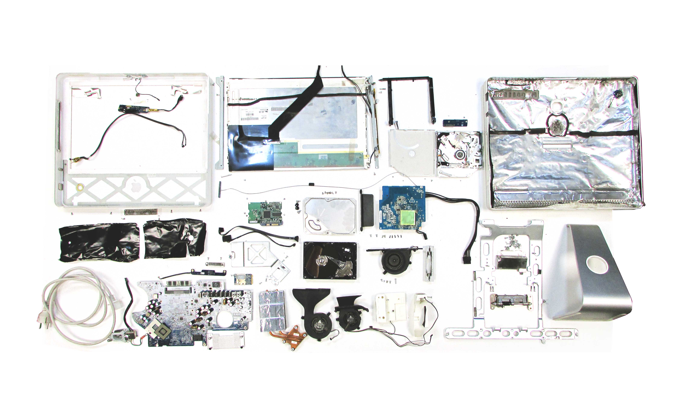

Tech Beyond the Myth¶
The Almost Useful Machines¶
Here you can check the video

The Loner Booth presentation¶
The Loner Booth reflections¶
The Loner Booth concept was created during the process of knowing the parts of tech that we have at hand and to recognizing their potential. We stating talking about our feeling in the moment and creating a general concept that was around loneliness and happiness.
After that the most difficult part, in my opinion was to understand the logical part of the code in order to make the machine work and understanding what extra components were needed. For me a difficult task at the moment has been understanding the logical process for coding and the language used for Arduino. Until know I have not previous experience using this component but is a skill I want to develop in my time at IAAC.
Another reflection was to see the esthetics and the function of having a “case” for the circuits that power the machine, manufactured from cardboard allowing us to made them in the moment and with the flexibility to add or remove circuits, boards and intervene the circuit for repair it. That is an example how appliances or other tech devices could be designed and manufactured under a different paradigm as the actual linear and mass production one.

iMac Destructor¶
Visit the link for the report
Reflections¶
The styling slavery???…dictatorship??..mmm working Title¶
Disassembling the iMac 2006 , was for me like a magician trick, the one in which he keeps pulling out infinite amount of handkerchiefs form his sleeve. As we were disassembling the different part of the computer we were finding seals, screws, foils, plates, tapes, cables, connectors, board, drivers, frames, big parts and smaller parts. One can’t avoid thinking about the un-recyclability or re-usability (in the best case scenario) of those components. Must of the circuits board are still operational, but not much efficiently in comparison with the newest devices.
From one side, we could appreciate the form and style of the case of different appliances, and one cannot stop thinking about how this external cases are just a pretext for the design styling that satisfy an imposed need for aesthetics. This styling lead to design and manufacture artifacts and appliances as black boxes totally away of the consumer’s hands. Maybe if we remove this cases could be spoken about more durable appliances and artifacts with universal drivers and motherboards, that you can used and shared, no matter is for a TV or a PC or whatever.
For other, at the present times, from the design and engineering point of view it doesn’t makes sense to keep designing with the same logic dictated by the market and the business models of the companies, that in order to survive (give us work and pay us money to eat) they must sell as many objects as fastest and cheapest they can. What would happen if courses like de MDEF could be more open and in some way attractive to students from a broader background or disciplines, like accounting, marketing, finance? How can we keep them away from the MBAs?
In enterprises like Apple, the design department probably is not as bigger as the law or accounting department. As designers, how can communicate and motivate other disciplines to design under new paradigms of consumption? such paradigm may have to respond to the real needs of the people, and not to the survival necessities of the business model of a company.
If we as a designers and engineers, know from fact that the technology would be obsolete in a few years, why don’t we design appliances and artifacts with that as guide?
Can appliances and objects could be designed from scraps parts or generic parts without a case, designed for grown in time? How these appliances could look like without a stylish case?
One think that I notice when the iMac was being disassembled, was that the sole act of manually handle the object produce some emotional reaction in the user, in these case the person that disassembled it. And I remember that in some point John Wood mention that another perspective to make a sustainable design is to have one object which the user would never trough it away. With that in mind, can we design appliances and artifacts that could stablish an emotional bonding with the user in order to never be discarded? Maybe we can design objects in which the user has to be more involved from the “birth” of the appliance, from selecting the material, the origin, the motherboards, the function that would perform and assembly it by himself, and keep it always updated and never obsolete.
Could it be a game changer ? or just greenwashing ?? Apple repair , check
Sense-Making Journal - Urban Gardeners¶
====================
:::info A report by the Urban Gardeners team 🌱 : Gerda, Fiorella, Paula, Emilio, Audrey and Busisiwe :::

Journal Index
From objectives to the hypothesis¶

Brainstorming¶


Project Goals¶
objective: I WANT TO PRODUCE MY FOOD.
Can I produce the ingredients of my meals at home or my neighborhood?
hypothesis: I CAN PRODUCE THE INGREDIENTS OF MY MEALS AT HOME OR MY NEIGHBORHOOD.
Tips¶
We recommend that, in order to realize the experiment properly, we require to collect data during the year, because of the time of growth of the plants.
Nutritional data is required to estimate possible species to grow, and therefore the space demanded for a person to grow his food.
In addition, being aware that particles in the air and other gases might affect the correct development of plants.
And, try to not be around the sensor while it is doing the measurement because it affect the results.
From hypothesis to data¶
Tools selection¶
We chose the CITIZEN SENSING TOOLKIT http://making-sense.eu/wp-content/uploads/2018/01/Citizen-Sensing-A-Toolkit.pdf


We selected it because we wanted to figure out how is the weather (temperature, humidity, light, eCO2, eVO2) in the possible free spots to grow food in the neighborhood and compare it to what the plants require to grow there.
Tool usage documentation¶
The process can be replicated using the same Citizen Sensing Toolkit, what we recommend is to do it at different times a day and in all the seasons if it is referred to growing plants.
Check the outliers when you download the information.
Data capturing strategy¶
First, we choose the places that are already working as urban gardens, then we start thinking of possible places that might be used to check if they can be used to growing the food, and what types of food might be there.

The data was taken from 14:30pm to 16:30pm in 7 places that we checked before start.

Then we download the data in the laptop to start the cleaning of the information.


Materials needed¶
- Smart citizen kit sensor
- USB cable
- Computer to configure the SCK
- Cell phone to connect the SCK using WiFi connection, and take pictures and videos to documentation.
Detail setup instructions¶
- The first step is to connect the battery. The kit will light in red (configuration mode)
- Sign up to the Smart Citizen Platfom
- When the light is red, the CSK is ready to set up, either by WiFi or SD Card connection
- When the light is blue, the SCK is on Wi-Fi connection. In this way, the device will publish the data every minute on the smartcitizen.me platform
- When the SCK is pink, it is on offline mode and is saving the information on the SD Card
- When we measured, we pressed the button once until the light turnd pink, we measured for 10 minutes then switched it to standy turning the light red Find a good and clear location to place the Citizen Sensing Toolkit. If you need to measure light, make sure it is “face up”.


Data collected¶
Using the Smart citizen kit, we planned to visit 6 different locations to gather data on light quality, humidity, Temperature and particle matter.
MAP OF LOCATIONS WHERE DATA WAS RETRIEVED
IAAC-ROOFTOP


JARDINS DE MERCÉ


CONNECTHORT


AV. D’ICARIA


CEMETERY


PARC MARIPOSA


CARRER DE PUJADES


The raw data is provided in spreadsheets:

Tips¶
We would have to measure with multiple devices in order to have the conditions in different places at the same time of the day and for a longer time
Data capture¶
Data summary¶
| Data Summary | |
|---|---|
| Project Title | Urban Gardeners |
| Capture Start | 11-11-2021 |
| Capture End | 12-11-2021 |
| Original Data Format | CSV file |
| Submitted format | CSV file |
| Total Data Points | 359 |
| Number of datasets | 2 |
| Data Repository | https://github.com/fablabbcn/mdef-a-world-in-data/tree/main/urban-gardeners |
Optimal Conditions¶


Data insights¶
- We compared the data captured in the 7 spots.
To improve the data: - We would need to take measurements of all year and at the same time in different places. - In order to have an efficient use of the space for producing the plants, we would have to measure characteristics of the soil as well (nutrients, chemicals, ph, etc.) - Other parameters could be taken into account: available time of people to take care of it, space available.
Raw data

We used google sheet pivot tables to agregate data into averages by location and also to focus on specific parameters.
Average of data by location

Focus of each location data to remove potential outliers

Comparision bubble chart
- x = temperature
- y = light
- diameter of the bubbles = CO2 particules
We displayed the ideal location conditions needed for the 4 vegetables we studied above.
Potatoes, carrots : not any location studied respond to the requirement of light needed
Lettuce, tomatoes : only the rooftop of IAAC would allow us to grow these!
We need to continue the research on the vegetables that we can grow in the winter season with very little light.

Tips and biais¶
We didn’t pay attention to the noise sensor so we made some noise discussing just next to the sensor during the data capturing. It would be interesting to stay silent or go further during the recording so we can see how much frequentation there is in the different locations.
Scale the process : To record more accurate and more comparable data, it would be better to record a full day and not just 10 minutes to know how much light the location gets. Here we just recorded 10 minutes in each spot and not at the same time of the day (between 1pm and 4:30pm).